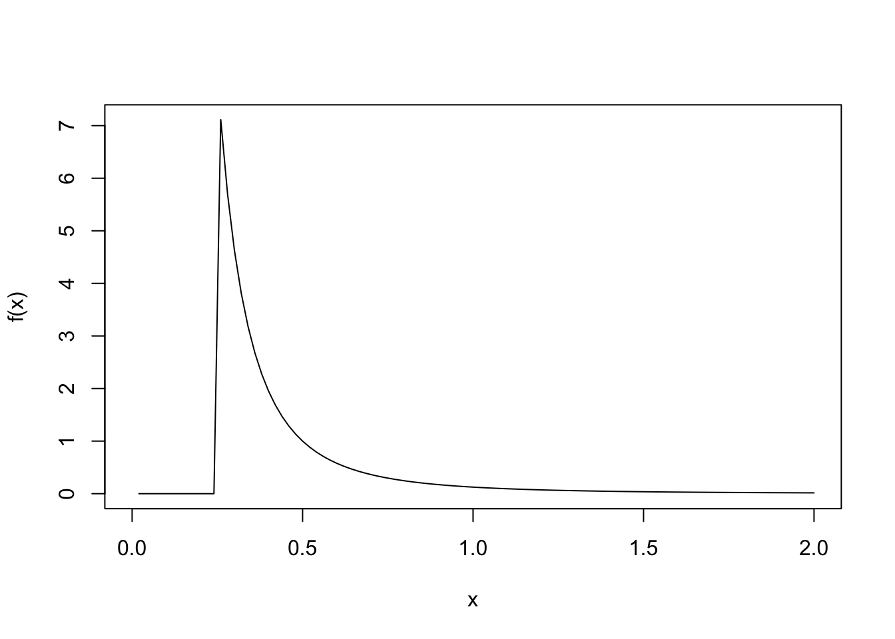
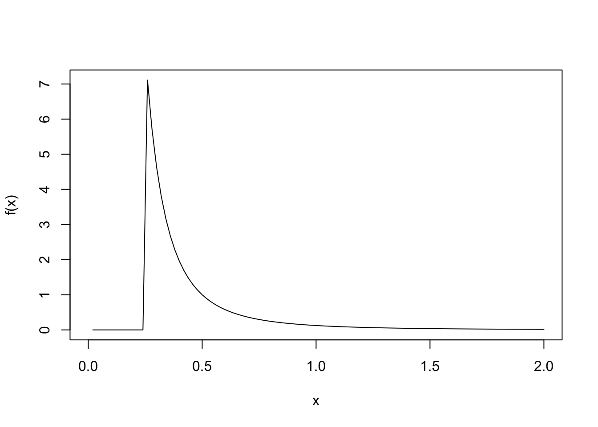
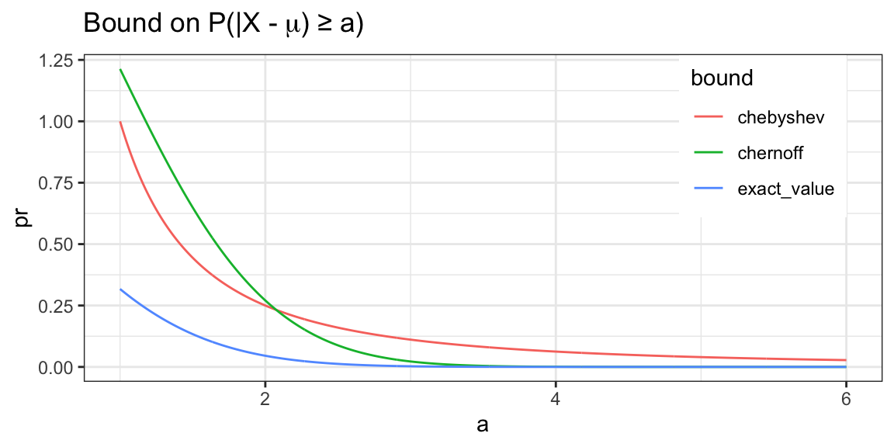
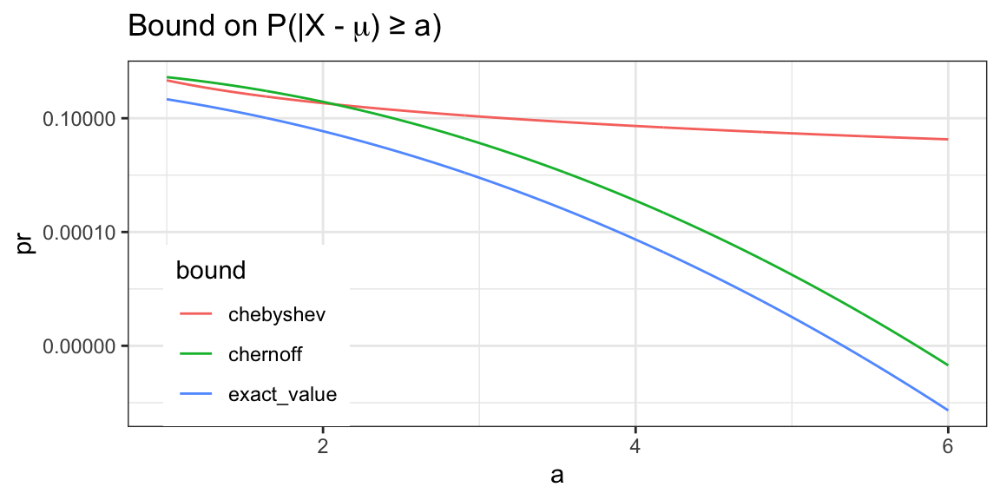

f <- function(x) {2 * .25^(2) / x^(2 + 1) * (x > .25)}
curve(f, from = 0, to = 2)
We left off talking about bivariate normal distributions. We characterized them using their covariances, and showed that we could use matrix decomposition on the covariance matrix to give it an interpretation in terms of rotation and scaling matrices.
Some handy definitions:
The eigendecomposition of \(\Sigma\) is \(\Sigma = U \Lambda U^T\).
A matrix is orthogonal if \(U^TU = I\) and \(UU^T = I\), a generalization of the unit-length vector.
Something I’m not sure about is how to write down the rotation matrix for a \(n > 2\) dimensional space.
We can represent \(\begin{bmatrix} X_1 \\ X_2 \end{bmatrix} \sim \mathcal N(0, \Sigma)\) as
\[\begin{bmatrix} X_1 \\ X_2 \end{bmatrix} = \begin{bmatrix} u_{11} & u_{12} \\ u_{21} & u_{22} \end{bmatrix} \begin{bmatrix} \sqrt{\lambda_1} & 0 \\ 0 & \sqrt{\lambda_2} \end{bmatrix} \begin{bmatrix} Z_1 \\ Z_2 \end{bmatrix}\]
What’s the means of \(X_1\), \(X_2\)? Zero. Because it’s an expectation of a constant matrix times a constant matrix times the \(Z\) values.
What’s the covariance matrix of \(X\)?
\[X = U \Lambda^{1/2} Z \] \[ \text{Cov}(X) = \text{Cov}(U \Lambda^{1/2} Z)\] \[ = U \Lambda^{1/2} \text{Cov}(Z) \Lambda^{1/2} U^T \] \[ = U \Lambda^{1/2} I \Lambda^{1/2} U^T \] \[ = U \Lambda U^T.\]
\[ = \Sigma. \]
We have to verify now that the definition for bivariate normality holds.
To satisfy the definition of bivariate normality for any random vector \((X,Y)\), we want to show that for any \(a,b \in \mathbb R\) such that \(a_1X + a_2Y\) is normally distributed. Let $a = \[\begin{bmatrix} a_1 \\ a_2 \end{bmatrix}\]To get \(X_1 + X_2\), we would want to calculate:
\[ \begin{aligned} a^T X & = \underbrace{a^T U \Lambda^{1/2}}_{b^T = \begin{bmatrix} b_1 & b_2 \end{bmatrix}} Z \end{aligned} \]
Using moment generating functions, we showed that the sum of two independent normal distributions, then the combination of the two has mean as sum of the means and the variance is
\[b_1 Z_1 \sim \mathcal N(0, b_1^2)\] \[b_2 Z_2 \sim \mathcal N(0, b_2^2)\]
\[b_1 Z_1 + b_2 Z_2 \sim \mathcal N(0, b_1^2 + b_2^2) \quad \quad \text{ by a prior mgf argument}\]
Principal components analysis can be done by applying this decomposition to the sample covariance \(\hat \Sigma\) estimated from data \(x_1, ..., x_n \in \mathbb R^2\).
The columns of \(U\) are PC directions, \(s_1\), \(s_2\) are the PC scales, \(U^T x_i\) are the PC scores.
One useful feature of thinking about PCA as a probabilistic argument is that it reveals its sensitivity to outliers, because normal distributions are sensitive to outliers.
The mgf of a bivariate random vector \(X = (X_1, X_2)^T\) is defined to be
\[M_X(t) = \mathbb{E}\exp (t_1 X_1 + t_2 X_2) = \mathbb{E}\exp (t^T X),\]
for \(t = \begin{bmatrix} t_1 \\ t_1 \end{bmatrix} \in \mathbb R^2\).
If \(X\) is bivariate normal then
\[M_X(t) = \exp \left( t_1 \mu_{x_1} + t_2 \mu_{x_2} + \frac{1}{2} \left(t_1^2 \sigma^2_{x_1} + 2t_1 t_2 \rho \sigma_{x_1} \sigma_{x_2} + t_2^2 \sigma_{x_2}^2 \right) \right). \]
In matrix/vector notation, if \(\begin{bmatrix} X_1 \\ X_2 \end{bmatrix} \sim \mathcal N(\mu, \Sigma)\), then
\[M_X(t) = \exp \left( t^T \mu + \frac{1}{2} t^T \Sigma t \right) \]
Earlier we saw Boole’s Inequality and Bonferroni’s inequality. Inequalities are quite useful in probability because it’s often easier to bound some quantity of interest than to characterize it exactly. Often a decent bound is all that is needed.
For example, suppose you are manufacturing widgets. Each widget can be defective in three different ways, \(A_1, A_2, A_3\). You have data on the probability of each type of defect \(P(A_k)\), but you don’t have any data on the joint probability of these events.
Fortunately the probability of any defect can be bounded using Boole’s inequality:
\[P(A_1 \cup A_2 \cup A_3) \leq P(A_1) + P(A_2) + P(A_3) \]
If each \(P(A_k)\) is small, then we can guarantee that the probability of any defect occuring is small.
if the number of possible defects is large, then their pairwise possible combinations are quite large, so we can save on data collection quite a bit.
Boole’s inequality (aka union bound): For any \(A_1, A_2, ...\)
\[P \left( \bigcup_{i=1}^\infty A_i \right) \leq \sum_{i=1}^\infty P(A_i).\]
Bonferroni’s inequality:
\[P\left( \bigcap_{i=1}^\infty A_i \right) \geq 1 - \sum_{i=1}^\infty P(A^c_{i}).\]
One of the simplest but most useful inequalities in probability theory:
Markov’s inequality: if \(X\) is nonnegative and \(a > 0\), then
\[P(X \geq a) \leq \frac{ \mathbb{E}X }{a}. \]
Proof:
Since \(1 \geq \mathbb 1(X \geq a),\)$
\[\begin{aligned} \mathbb{E}X & \geq \mathbb{E}X \mathbb 1 (X \geq a) \\ & \geq \mathbb{E}a \mathbb 1(X \geq a) \\ & = a P(X \geq a). \end{aligned} \]
Dividing both sides by \(a\) yields the result.
You invest $1000 dollars in a holding where the annual returns are \(\mathrm{Pareto}(\alpha, c)\) distributed with \(\alpha = 2\) and \(c = 1/4\).
More precisely, after \(n\) years, your investment is worth
\[Y_n = 1000 X_1 X_2 \cdots X_n\]
dollars, where \(X_1, ..., X_n \sim \mathrm{Pareto}(\alpha, c)\) independently.
Recall that the pdf of \(\mathrm{Pareto}(\alpha, c)\) is
\[p(x) = \frac{\alpha c^{\alpha}}{x^{\alpha+1}} \mathbb 1(x > c).\]
Is this a good investment?
First, guess using your intuition. Then try to show something formally.
f <- function(x) {2 * .25^(2) / x^(2 + 1) * (x > .25)}
curve(f, from = 0, to = 2)
Since so much of the pdf appears to be concentrated in (0.25,1), we were wondering, given that the Pareto distrbution has heavy tails, what’s the probability of getting an outcome \(\geq 1\)?
cdf_f <- function(x) { 1 - (.25/x)^2 }
1 - cdf_f(1)[1] 0.0625It looks like that might happen 6.25% of the time, but we don’t really have a sense of how large those values might be.
Applying Markov’s theorem:
We’re interested in \(P(Y_n \geq a) \leq \frac{\mathbb{E}Y_n}{a}\).
\[ \begin{aligned} P(Y_n \geq a) & \leq \frac{\mathbb{E}Y_n}{a} \\ & = \frac{\mathbb{E}10000 X_1 \cdots X_n}{a} \\ & = \frac{1000 (\mathbb{E}X_1) \cdots (\mathbb{E}X_n)}{a} \\ & = \frac{1000}{a} \left( \frac{\alpha c}{\alpha - 1} \right)^n \\ & = \frac{1000}{a} \left( \frac{1}{2} \right)^n \stackrel{n \to \infty }{\Longrightarrow} 0 \\ \Longrightarrow & P(Y_n \geq a) \longrightarrow 0 \quad \text{ for all } a > 0. \end{aligned} \]
If one sees a probability of some large event that they want to bound, usually the first thing one should try is applying Markov’s theorem.
\[P(|X| \geq a) \leq \frac{\mathbb{E}|X|}{a}.\]
\[P(X \geq a) \leq \frac{\mathbb{E}g(X)}{g(a)}.\]
\[P(|X - \mathbb{E}X| \geq a) \leq \frac{\text{Var}(X)}{a^2}.\]
Chebyshev’s inequality allows us to bound the probability that a random variable is a certain distance from its mean.
Try to show 2 and 3 using Markov’s inequality.
Because \(x \geq a \to g(x) \geq g(a)\), \[P(X \geq a) \leq P(g(X) \geq g(a)) \quad \text{ since $g$ is monotonically increasing}.\]
(If the statement said strictly monotone, the first inequality would be an equality.)
Note that \(g(a)\) needs to be positive.
And then apply Markov’s inequality to get that
\[P(X \geq a) = P(g(X) \geq g(a)) = \frac{\mathbb{E}g(X)}{g(a)}.\]
Then for 3, we want to set \(g(x) = x^2\), which is monotonically increasing on \(X \geq 0\).
\[\begin{aligned} P(|X-\mathbb{E}X| \geq a) & = P(| X - \mathbb{E}X |^2 \geq a^2) \\ & \leq \frac{ \mathbb{E}|X-\mathbb{E}X|^2 }{a^2} \\ & = \frac{\text{Var}(X)}{a^2}, \end{aligned} \]
noting that \(|X - \mathbb{E}X|\) and \(a^2\) being non-negative is what makes this work.
Suppose \(X \sim \mathcal N(\mu, \sigma^2)\) and we want to bound the probability that \(X\) is far from its mean. The exact expression involves the standard normal CDF \(\Psi(x)\):
\[P(|X - \mu| \geq a) = P\left( \lvert\frac{X - \mu}{\sigma} \rvert \geq a / \sigma \right) = 2 \Psi(-a/\sigma) \] for \(a > 0\). However, \(\Psi(x)\) does not have a simple closed form.
Meanwhile, Chebyshev’s inequality easily yields \[P(|X-\mu| \geq a) \leq \frac{\text{Var}(X)}{a^2} = \frac{\sigma^2}{a^2} \]
This is a surprisingly powerful corollary of Markov’s inequality. It yields an exponentially decaying bound as \(a\) grows, compared to the \(1/a\) in Markov’s inequality.
Chernoff’s bound
\[P(X \geq a) \leq \inf_{t > 0} e^{-ta} \mathbb{E}\exp (tX) \]
Proof: For all \(t > 0\),
\[ \begin{aligned} P(X \geq a) & = P(tX \geq ta) \\ & = P(\exp (tX) \geq \exp (ta)) \\ & \leq \frac{\mathbb{E}\exp (tX)}{\exp (ta)} \\ = e^{-ta} \mathbb{E}\exp (tX). \end{aligned} \]
Since the left-hand side doesn’t depend on \(t\), the inequality holds when taking the infimum of the right-hand side over \(t\).
Suppose \(X \sim \mathcal N(\mu, \sigma^2)\). By Chernoff’s bound,
\[\begin{aligned} P(X - \mu \geq a) & \leq \inf_{t > 0} e^{-ta} \mathbb{E}\exp \left( t(X - \mu) \right) \\ & = \inf_{t > 0} e^{-ta} \exp \left( \frac{1}{2} \sigma^2 t^t \right) \\ & = \inf_{t > 0} \exp \left( -ta + \frac{1}{2} \sigma^2 t^2) \end{aligned}\]
using the formula for the mgf of \(X - \mu \sim \mathcal N(0, \sigma^2)\).
To minimize \(f(t) = -ta + \frac{1}{2} \sigma^2 t^2\) we set
\[ 0 = f'(t) = -a + \sigma^2 t \]
and solve to get \(t = a/\sigma^2\). Plugging this in yields \[P(X - \mu \geq a) \leq \exp (- a^2/\sigma^2 + \frac{1}{2} a^2 / \sigma^2) = \exp(-\frac{1}{2} a^2 / \sigma^2).\]
By symmetry \(P(-(X-\mu) \geq a) \leq \exp( - \frac{1}{2} a^2 / \sigma^2)\). Thus,
\[P(|X - \mu | \geq a) \leq 2 \exp ( -\frac{1}{2} a^2 / \sigma^2).\]
library(tidyverse)── Attaching core tidyverse packages ──────────────────────── tidyverse 2.0.0 ──
✔ dplyr 1.1.2 ✔ readr 2.1.4
✔ forcats 1.0.0 ✔ stringr 1.5.0
✔ ggplot2 3.4.2 ✔ tibble 3.2.1
✔ lubridate 1.9.2 ✔ tidyr 1.3.0
✔ purrr 1.0.1
── Conflicts ────────────────────────────────────────── tidyverse_conflicts() ──
✖ dplyr::filter() masks stats::filter()
✖ dplyr::lag() masks stats::lag()
ℹ Use the conflicted package (<http://conflicted.r-lib.org/>) to force all conflicts to become errorsdf <- tibble(
a = seq(1, 6, length.out = 1000),
exact_value = pnorm(q = -a) + (1-pnorm(q = a)),
chebyshev = 1/a^2,
chernoff = 2*exp(-.5*a^2)
)
plt1 <- df |>
tidyr::pivot_longer(
cols = c(exact_value, chebyshev, chernoff),
names_to = 'bound',
values_to = 'pr'
) |>
ggplot(aes(x = a, y = pr, color = bound)) +
geom_line() +
theme_bw() +
theme(legend.position = c(.85,.75)) +
ggtitle(expression(paste("Bound on P(|X - ", mu, ") ≥ a)")))
plt2 <- plt1 +
scale_y_log10(labels = scales::number_format()) +
theme(legend.position = c(.15, .25))
plt1 
plt2 
A tighter bound can be achieved using
\[ P(|X - \mu| \geq a) \leq \sqrt{\frac{2 \sigma^2}{\pi a^2}} \exp ( -\frac{1}{2} a^2 / \sigma^2 ). \]
A function \(g : \mathcal X \to \mathbb R\) is convex if
\[g(tx + (1-t)y) \leq tg(x) + (1-t)g(y) \]
A function \(g: \mathcal X \to \mathbb R\) is concave if \(-g\) is convex.
Intuition: Conex functions curve upwards, concave functions curve downwards.
tibble(
x = seq(-2,2,length.out=1000),
x2 = x^2,
exp = exp(x),
neg_log = -log(x),
x_inv = 1/x
) |> tidyr::pivot_longer(
cols = 2:5,
names_to = 'f',
values_to = 'g(x)'
) |>
# mutate(
# f = case_when(
# f == 'x2' ~ paste(expression(x^2)),
# f == 'exp' ~ paste(expression(e^x)),
# f == 'neg_log' ~ paste(expression(log(x))),
# f == 'x_inv' ~ paste(expression(1/x))
# )
# ) |>
ggplot(aes(x = x, y = `g(x)`, color = f)) +
geom_line()Suppose \(g : \mathcal X \to \mathbb R\) is twice-differentiable at all \(x \in \mathcal X\). Then \(g\) is convex if and only if
\[\frac{\partial^2}{\partial x^2 } g(x) \geq 0\]
for all \(x \in \mathcal X\).
Suppose \(g : \mathcal X \to \mathbb R\) is a convex function. For any \(x_0 \in \mathcal X\), there exist \(a,b \in \mathcal R\) such that \[ax + b \leq g(x)\] for all \(x \in \mathcal X\) and
\[a x_0 + b = g(x_0)\]
Jensen’s Inequality: If \(X\) is a random variable with range \(\mathcal X\) and \(g: \mathcal X \to \mathbb R\) is a convex function, then
\[g(\mathbb{E}X) \leq \mathbb{E}g(X).\]
Proof: Define \(x_0 = \mathbb{E}X\). Since \(g\) is convex, there exist \(a, b \in \mathbb R\) such that \(ax + b \leq g(x)\) for all \(x \in \mathcal X\) and \(ax_0 + b = g(x_0).\) Therefore,
\[g(\mathbb{E}X) = g(x_0) = ax_0 + b = \mathbb{E}(aX + b) \leq \mathbb{E}g(X).\]
The inequality of arithmetic means and geometric means is a classic result that can be easily proved using Jensen’s inequality.
Weighted AM-GM Inequality: For any \(x_1, ... x_n \geq 0\) and \(w_1, ..., w_n \geq 0\) such that \(\sum_{i=1}^n w_i = 1\),
\[w_1x_1 + ... + w_n x_n \geq x_1^{1_2} \cdots x_{n}^{w_n}.\]
Show this using Jensen’s inequality
Suppose \(X_1, ..., X_n\) are independent random variables such that \(r_i \leq X_i \leq s_i\) and denote \(\bar X = \frac{1}{n} \sum_{i=1}^n X_i\). Then for all \(a > 0\)
\[P(| \bar X - \mathbb{E}\bar X > a) \leq 2 \exp \left( - \frac{2a^n}{\frac{1}{n} \sum_{i=1}^n (s_i - r_i)^2} \right).\]
Hoeffding’s shows that for bounded independent random variables, the sample mean converges exponentially quickly to the mea.
Like Chernoff’s bound, Hoeffding’s provides an exponentially decaying bound as \(a\) grows. An advantage of Hoeffding’s is that the mgf doesn’t need to be known to get an explicit bound. On the other hand, the random variables need to be bounded.
For instance, if \(X_1, ..., X_n \sim \text{Bernoulli}(q),\) then
\[P(| \bar X - q | > a) \leq 2 \exp (-2a^n).\]